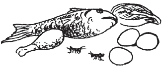
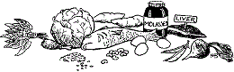

A woman who eats well is much more likely to have a healthy pregnancy and healthy baby. Eating well helps a woman and her baby stay healthy and strong.
Pregnant women need to eat more than usual. The extra food gives them enough energy and strength, and helps their babies grow.
It is important for pregnant women to eat a variety of food. She should try to eat some foods from each of these 3 groups every day:
Carbohydrates: such as rice, maize, wheat, millet, cassava, taro, or plantain.
Proteins: such as beans, peas, lentils, eggs, nuts and seeds, cheese, milk, yogurt, meat, fish or insects.
Fruits and vegetables: such as leafy greens, carrots, cabbage, peppers, oranges, melons, pineapple, papayas or mangoes.
Pregnant women are especially at risk for anemia (weak blood). Anemic women are more likely to bleed too much at birth, which can be deadly.
Eating more foods with iron will help prevent and treat anemia. Foods with a lot of iron include: